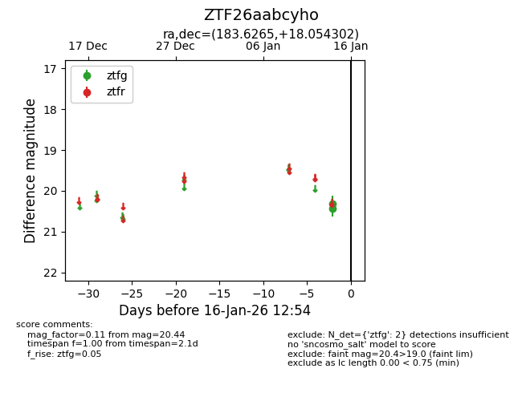
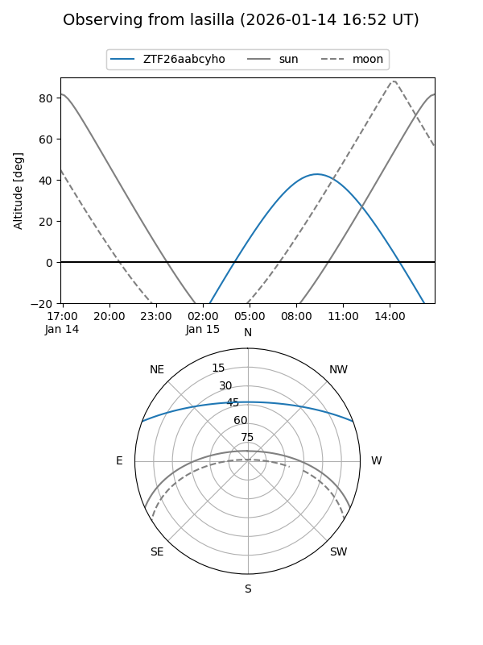

ZTF26aabcyho
Target ZTF26aabcyho at 2026-01-14 12:50
Aliases and brokers:
FINK: link
Lasair: link
ALeRCE: link
alt names
ZTF26aabcyho (ztf,fink_ztf)
Coordinates:
equatorial (ra, dec) = 183.6265,+18.05430
equatorial (HMS+DMS) = 12:14:30.35,+18:03:15.49
galactic (l, b) = (257.8458,+77.56013)
Flags:
Photometry:
last ztfg=20.44
1 ztfg detections
Lightcurve

Visibility


Additional plots